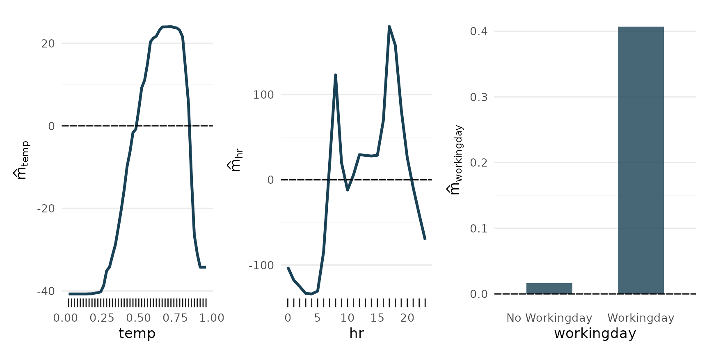
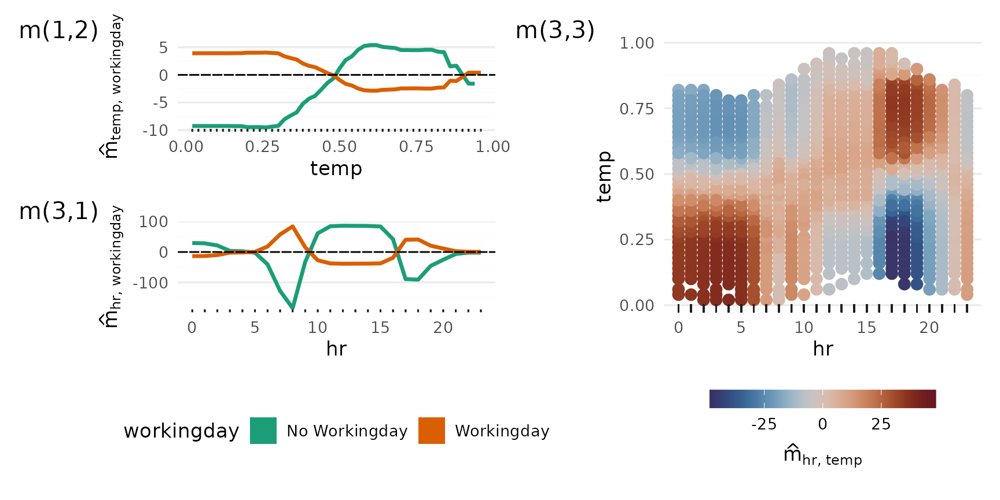
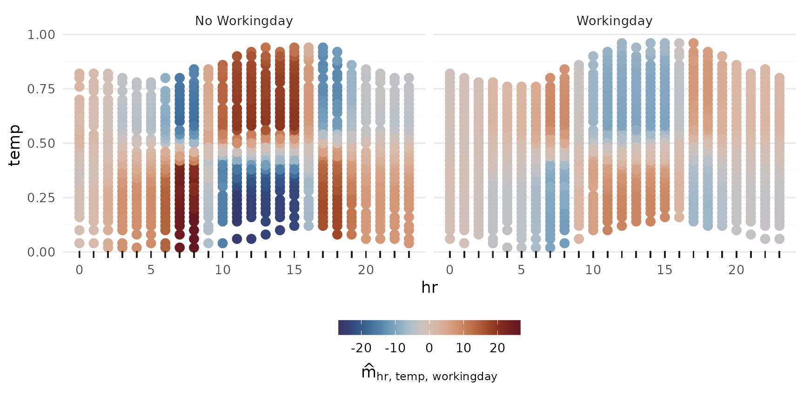
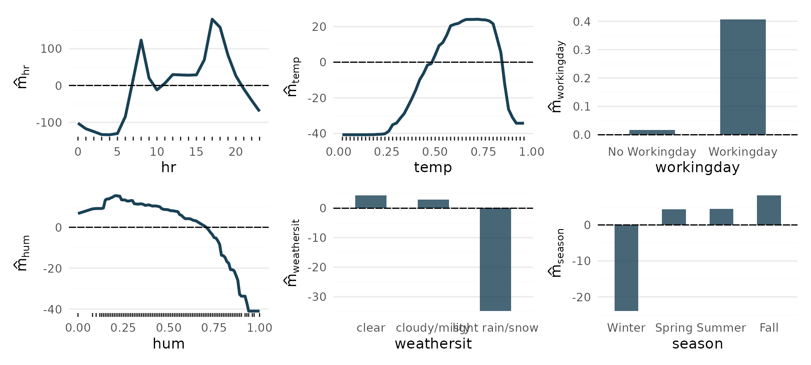
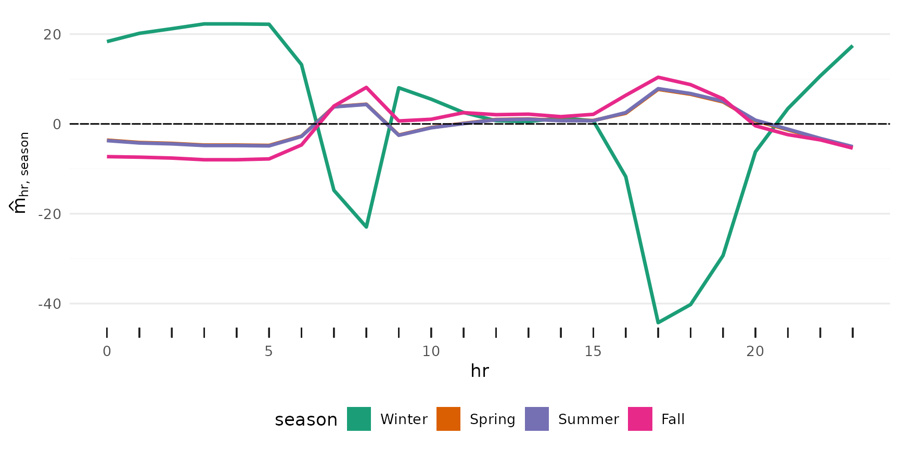
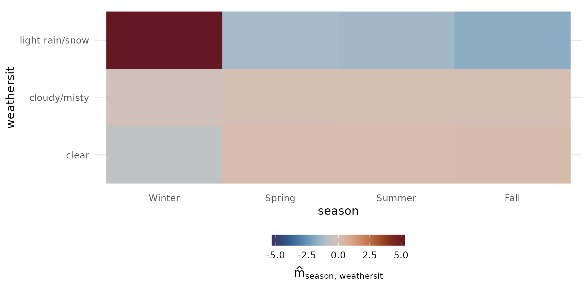
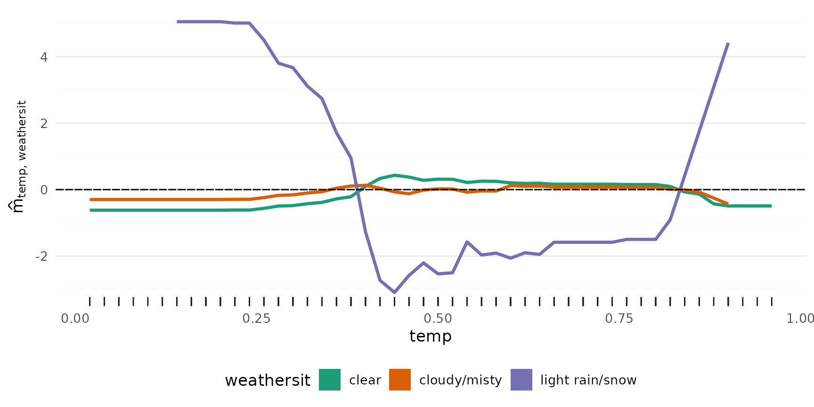
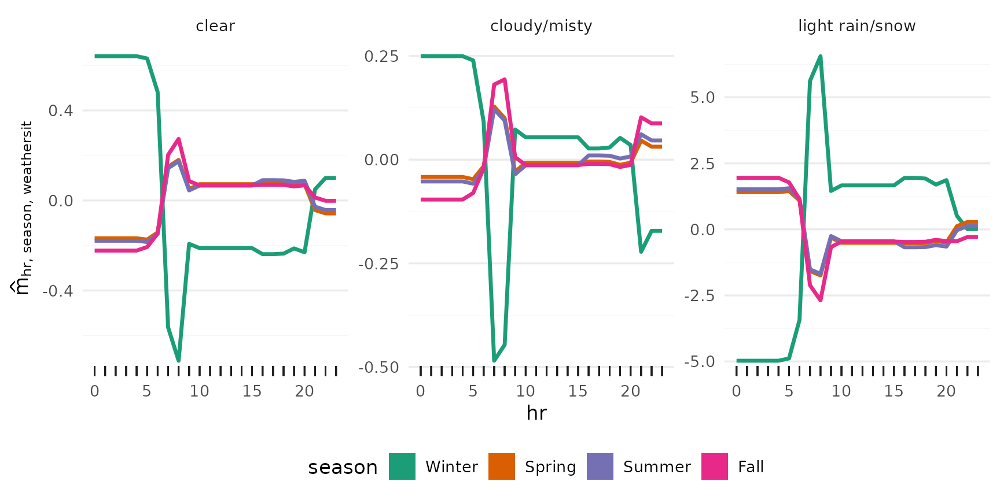
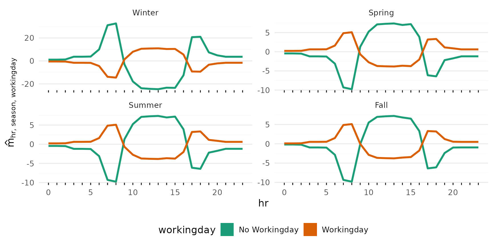
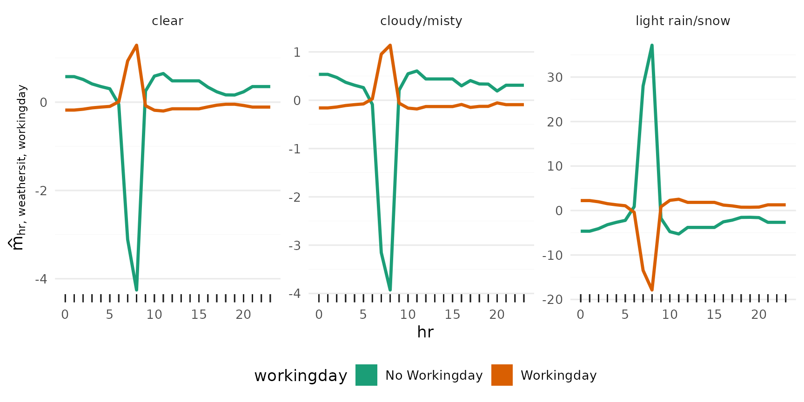

Bikesharing: Decomposition with Random Planted Forest
Source:vignettes/articles/Bikesharing-Decomposition-rpf.Rmd
Bikesharing-Decomposition-rpf.Rmd
library(glex)
library(randomPlantedForest)
library(data.table)
library(ISLR2) # For Bikeshare dataset
library(ggplot2)
library(patchwork) # To arrange plots
set.seed(2023)Preparing the Data
First we load the Bikeshare data from the
ISLR2 package, which provides the dataset published at the
UCI
Machine Learning Repository.
This data set contains the hourly and daily count of rental bikes between years 2011 and 2012 in Capital bikeshare system, along with weather and seasonal information.
The outcome is going to be bikers, the total number of
bikers in the system.
The predictors of interest in our case are going to be the following:
-
hr: Hour of day, 0 to 23 hours. -
temp: Normalized temperature in Celsius -
workingday: Binary value indicating whether it’s a work day (1) or not (0)
We recode the hr variable from a 24-level
factor to a numeric column.
data(Bikeshare)
bike <- data.table(Bikeshare)
bike[, hr := as.numeric(as.character(hr))]
bike[, workingday := factor(workingday, levels = c(0, 1), labels = c("No Workingday", "Workingday"))]
bike[, season := factor(season, levels = 1:4, labels = c("Winter", "Spring", "Summer", "Fall"))]
# Only one observation with this condition, removing it to make space.
bike <- bike[weathersit != "heavy rain/snow", ]
head(bike)
#> season mnth day hr holiday weekday workingday weathersit temp
#> <fctr> <fctr> <num> <num> <num> <num> <fctr> <fctr> <num>
#> 1: Winter Jan 1 0 0 6 No Workingday clear 0.24
#> 2: Winter Jan 1 1 0 6 No Workingday clear 0.22
#> 3: Winter Jan 1 2 0 6 No Workingday clear 0.22
#> 4: Winter Jan 1 3 0 6 No Workingday clear 0.24
#> 5: Winter Jan 1 4 0 6 No Workingday clear 0.24
#> 6: Winter Jan 1 5 0 6 No Workingday cloudy/misty 0.24
#> atemp hum windspeed casual registered bikers
#> <num> <num> <num> <num> <num> <num>
#> 1: 0.2879 0.81 0.0000 3 13 16
#> 2: 0.2727 0.80 0.0000 8 32 40
#> 3: 0.2727 0.80 0.0000 5 27 32
#> 4: 0.2879 0.75 0.0000 3 10 13
#> 5: 0.2879 0.75 0.0000 0 1 1
#> 6: 0.2576 0.75 0.0896 0 1 1Fitting, Purification, Component Extraction
Next we can fit a Random Planted Forest on the bikers
variable, using a subset of the available predictors. We limit the
model’s complexity by setting max_interaction = 3, as we
are only going to visualize interactions up to the third degree, and
using a higher value here might only marginally improve predictive
performance at the cost of a longer runtime. For our example here, a
smaller model with merely 30 trees suffices. We also purify
the forest to enable the desired decomposition. This step is not
required for global predictions and may take some time, which is why it
is implemented as a separate step.
rp <- rpf(
bikers ~ day + hr + temp + windspeed + workingday + hum + weathersit + season,
data = bike,
max_interaction = 3, ntrees = 50, splits = 100, t_try = 0.9, split_try = 5
)
purify(rp)
#> -- Regression Random Planted Forest --
#>
#> Formula: bikers ~ day + hr + temp + windspeed + workingday + hum + weathersit + season
#> Fit using 8 predictors and 3-degree interactions.
#> Forest is purified!
#>
#> Called with parameters:
#>
#> loss: L2
#> ntrees: 50
#> max_interaction: 3
#> splits: 100
#> split_try: 5
#> t_try: 0.9
#> delta: 0
#> epsilon: 0.1
#> deterministic: FALSE
#> nthreads: 1
#> purify: FALSE
#> cv: FALSEWe select the predictors of interest and use glex() to
retrieve all predictive components that include them, from main effects
to 3rd degree interactions. The resulting object also contains the
original data as x, which we need for later
visualization.
vars <- c("hr", "temp", "workingday", "hum", "weathersit", "season")
components <- glex(rp, bike, predictors = vars)
# There's a lot of components...
str(components$m, list.len = 8)
#> Classes 'data.table' and 'data.frame': 8644 obs. of 92 variables:
#> $ day : num -40 -40 -40 -40 -40 ...
#> $ hr : num -102 -118 -125 -133 -134 ...
#> $ temp : num -40.2 -40.4 -40.4 -40.2 -40.2 ...
#> $ windspeed : num 1.85 1.85 1.85 1.85 1.85 ...
#> $ workingday : num 0.0162 0.0162 0.0162 0.0162 0.0162 ...
#> $ hum : num -14.76 -13.84 -13.84 -5.05 -5.05 ...
#> $ weathersit : num 4.29 4.29 4.29 4.29 4.29 ...
#> $ season : num -24 -24 -24 -24 -24 ...
#> [list output truncated]
#> - attr(*, ".internal.selfref")=<externalptr>Please note that fitting the model, purification, and the extraction of the components may take some time, depending on available resources and the size of the data. For example, the above steps took around 300 seconds to complete on GitHub Actions.
Main Effects
p_main <- plot_main_effect(components, "temp") +
plot_main_effect(components, "hr") +
plot_main_effect(components, "workingday")
p_main + plot_layout(widths = c(.3, .3, .4))
2-Way Interactions
p_2way1 <- plot_twoway_effects(components, c("workingday", "temp"))
p_2way2 <- plot_twoway_effects(components, c("hr", "workingday"))
p_2way3 <- plot_twoway_effects(components, c("hr", "temp"))
p_2way <- (p_2way1 / p_2way2 +
plot_layout(guides = "collect") &
theme(legend.position = "bottom")) | p_2way3
p_2way <- p_2way +
plot_annotation(tag_levels = list(c("1,2", "3,1", "3,3")), tag_prefix = "m(", tag_suffix = ")")
p_2way
3-Way Interaction
p_3way <- plot_threeway_effects(components, c("hr", "temp", "workingday"))
p_3way
Additional effects
All main effects:
Iterating over vars (hr, temp, workingday, hum,
weathersit, season), and passing each to plot_main_effect,
then collecting the plots with patchwork::wrap_plots():
wrap_plots(lapply(vars, plot_main_effect, object = components))
From here we use autoplot for convenience. Internally it
just passes its arguments on to the specialized plot_*
functions, depending on the number of predictors supplied.



3rd degree interactions can be tricky, if they have any effect at all.


